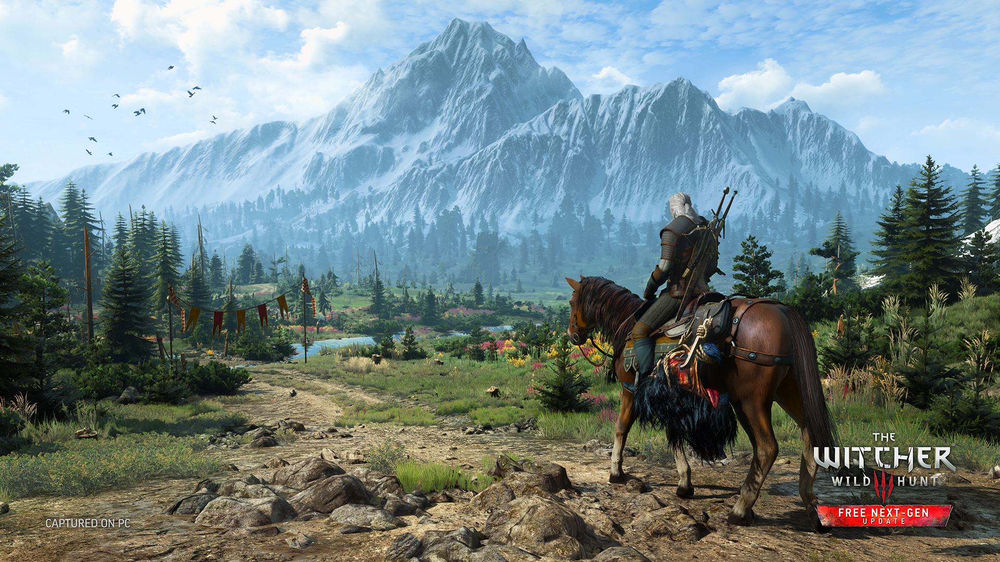
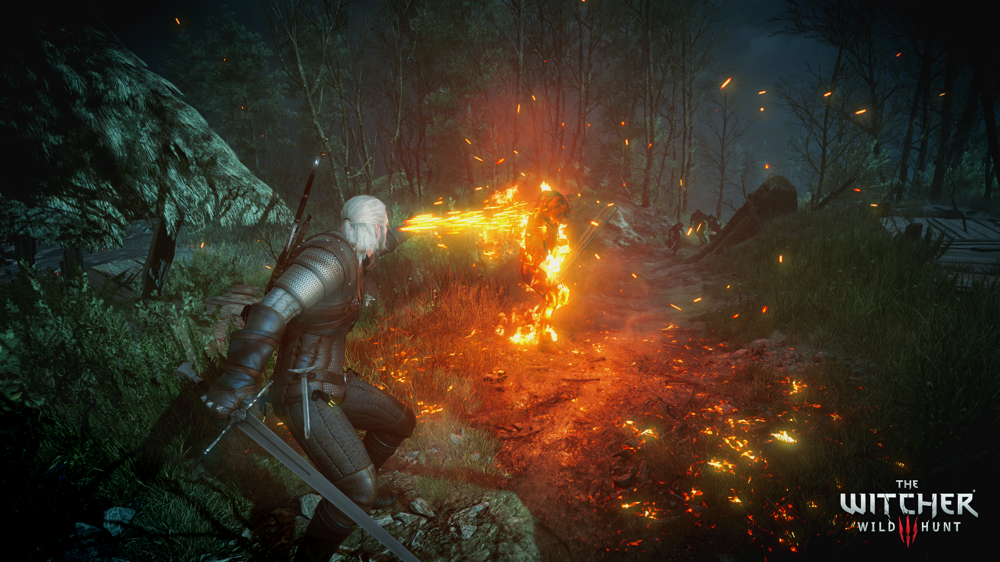
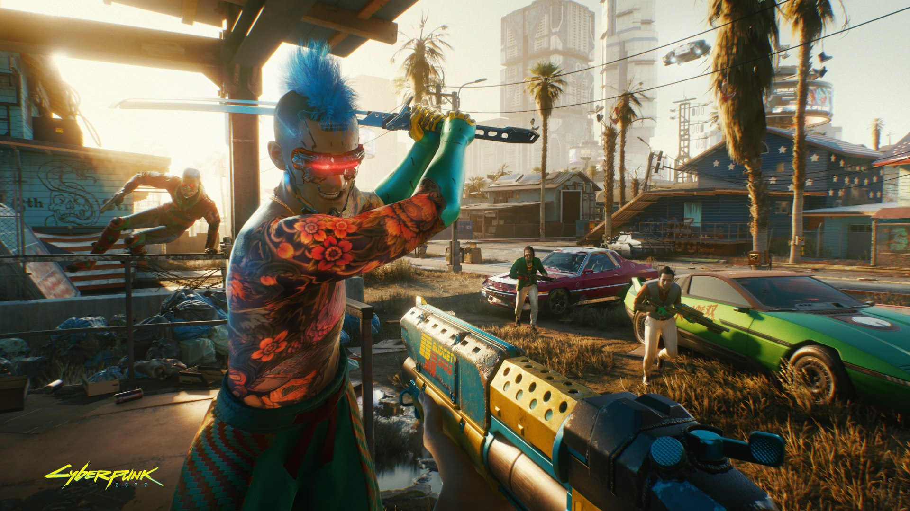
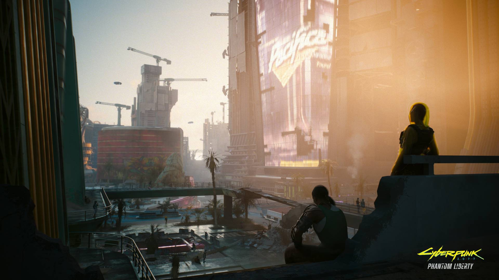
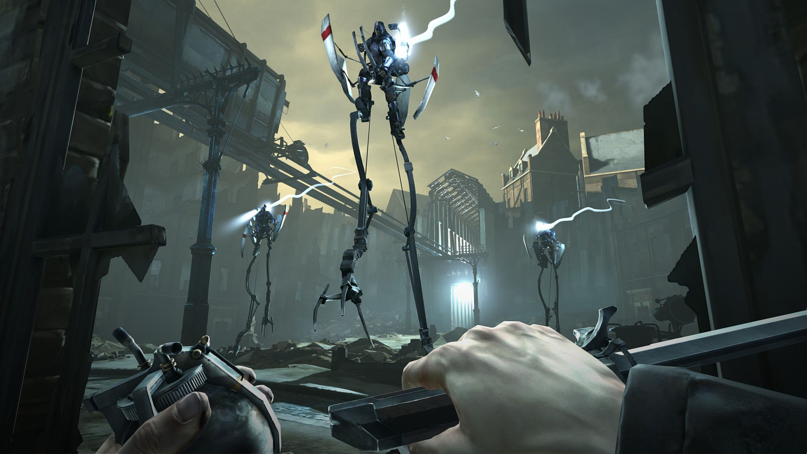
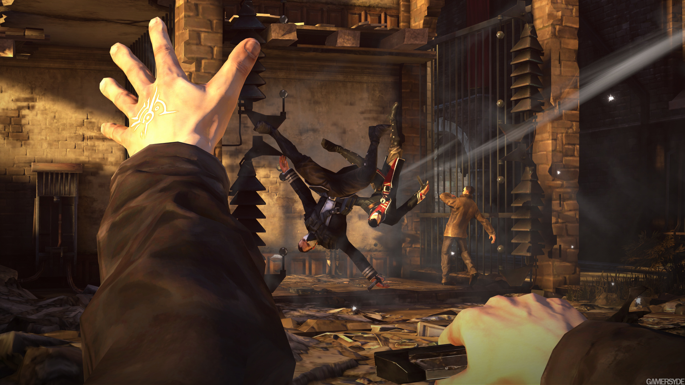
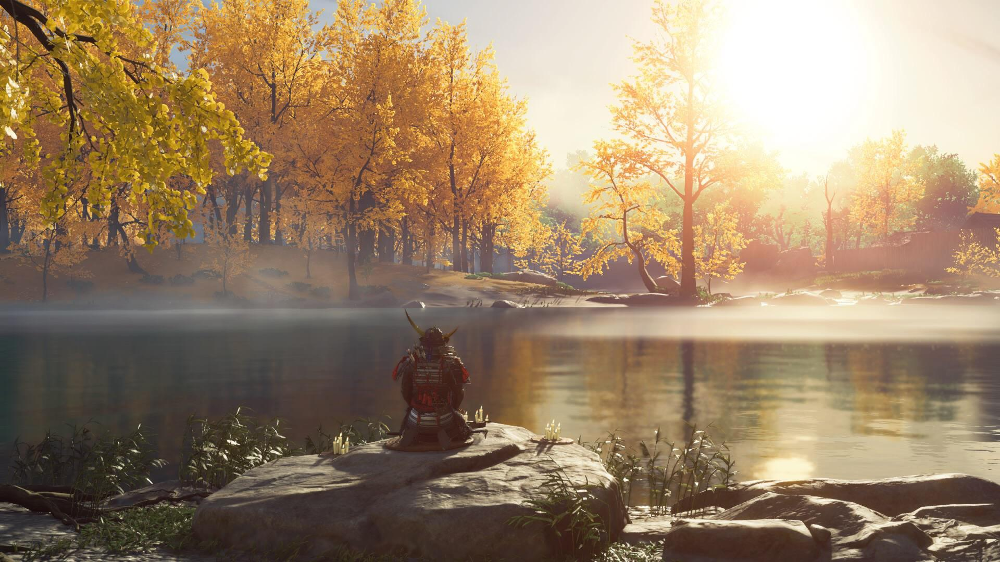
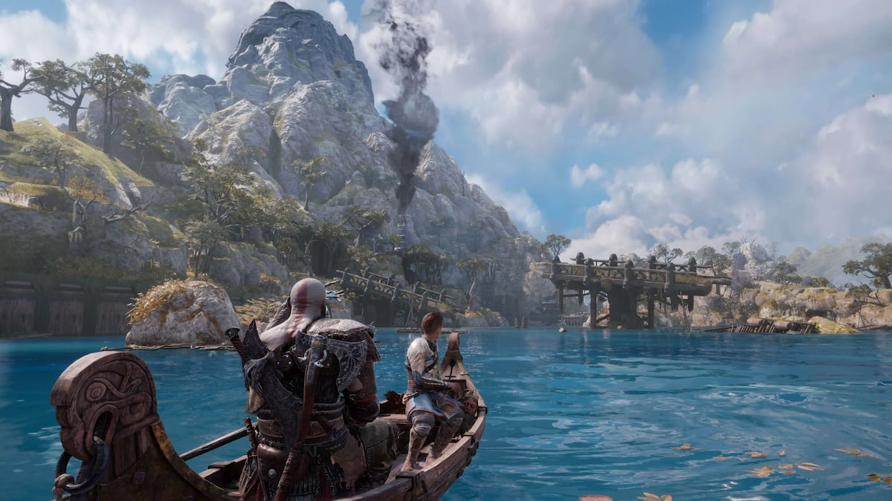
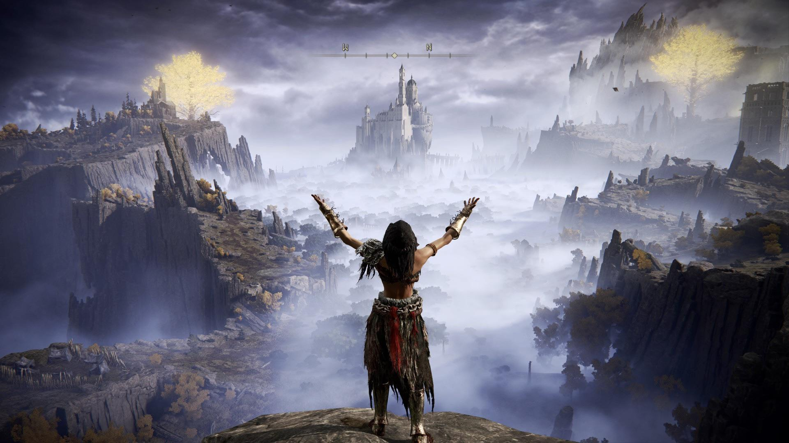
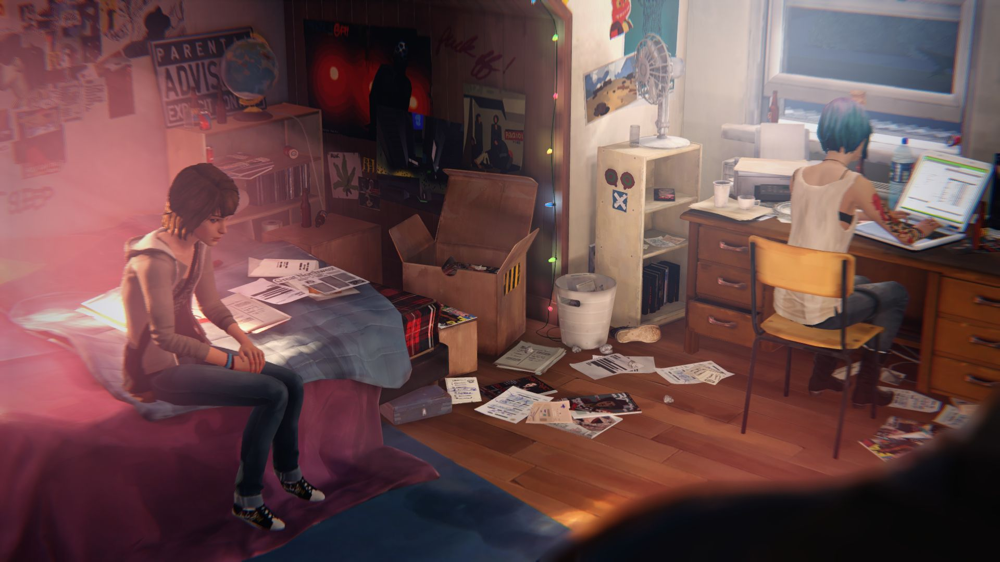

Twój dziennik gier
Gry, do których chcesz wracać.
Zapisuj tytuły na później, oceniaj ukończone historie i zachowuj wspomnienia z każdej sesji.
Moja kolekcja
Biblioteka
Twoje historie
Dziennik gracza
Otwórz grę i dodaj pierwszy wpis z sesji.
Kadry z gier
Galeria
1–3 / 18
Przeciągnij kadry lub użyj strzałek. Kliknij zdjęcie, aby je powiększyć.

The Witcher 3: Wild Hunt
The Witcher 3: Wild Hunt The Witcher 3: Wild Hunt The Witcher 3: Wild Hunt Cyberpunk 2077 Cyberpunk 2077
Cyberpunk 2077
Cyberpunk 2077
Dishonored
Dishonored
Ghost of Tsushima Ghost of Tsushima
God of War Ragnarök God of War Ragnarök Sekiro: Shadows Die Twice Hogwarts Legacy
Hogwarts Legacy

Elden Ring
Life Is Strange